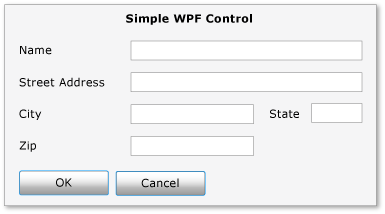
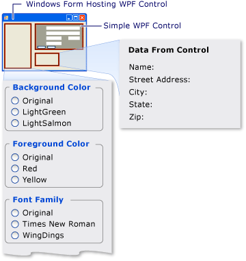

Пошаговое руководство. Размещение составного элемента управления WPF в форме Windows Forms
Windows Presentation Foundation (WPF) предоставляет среду с широкими возможностями для создания приложений. Тем не менее, если имеются существенные преимущества в Windows Forms код, он может быть более эффективным, расширение существующего Windows Forms приложения с WPF , а не переписывание кода с нуля. Распространенный сценарий — при необходимости внедрения одного или нескольких элементов управления, реализованных с WPF в приложении Windows Forms. Дополнительные сведения о настройке элементов управления WPF, см. в разделе Настройка элементов управления.
В этом пошаговом руководстве пошагово продемонстрирует приложение, на котором размещена WPF составного элемента управления для ввода данных в приложении Windows Forms. Составной элемент управления упакован в библиотеку DLL. Эта общая процедура может быть расширена для более сложных приложений и элементов управления. В этом пошаговом руководстве должна быть почти идентично повторяет свойства и функциональные возможности для Пошаговое руководство: Размещение Windows Forms составного элемента управления в WPF. Основным отличием является то, что сценарий размещения выполняется в обратном порядке.
Пошаговое руководство состоит из двух разделов. В первом разделе кратко описывается реализация WPF составного элемента управления. Во втором разделе подробно рассматриваются размещение составного элемента управления в приложении Windows Forms, получение событий от него и доступ к некоторым свойствам элемента управления.
В данном пошаговом руководстве представлены следующие задачи.
Реализация составного элемента управления WPF
Реализация ведущего приложения Windows Forms
Полный пример кода для задач, приведенных в этом пошаговом руководстве, см. в разделе размещение составного элемента управления WPF в Windows Forms образец.
Предварительные требования
Для выполнения шагов, описанных в этом руководстве, вам понадобится Visual Studio.
Реализация составного элемента управления WPF
WPF Составного элемента управления, используемый в этом примере представляет собой форму простого ввода данных, который принимает имя и адрес пользователя. Когда пользователь нажимает одну из двух кнопок, чтобы указать, что задача завершена, элемент управления создает пользовательское событие для возвращения сведений в ведущее приложение. На приведенном ниже рисунке показан отображаемый элемент управления.
На следующем рисунке показана составного элемента управления WPF:

Создание проекта
Для запуска проекта выполните указанные ниже действия.
Запустите Microsoft Visual Studioи откройте новый проект диалоговое окно.
В Visual C# и категории Windows выберите Библиотека пользовательских элементов управления WPF шаблона.
Присвойте проекту имя
MyControls.Для расположения укажите понятным именем папки верхнего уровня, такие как
WindowsFormsHostingWpfControl. Позже ведущее приложение будет помещено в эту папку.Нажмите кнопку ОК, чтобы создать проект. По умолчанию проект содержит один элемент управления с именем
UserControl1.В обозревателе решений Переименуйте
UserControl1дляMyControl1.
Проект должен иметь ссылки на перечисленные ниже системные библиотеки DLL. Если какие-либо из этих библиотек DLL не включены по умолчанию, добавьте их в проект.
PresentationCore
PresentationFramework
Система
WindowsBase
Создание пользовательского интерфейса
UI Для составного элемента управления реализуется с помощью XAML. Составной элемент управления UI состоит из пяти TextBox элементов. Каждый TextBox имеет связанный элемент TextBlock элемент, который служит в качестве метки. Существует два Button элементов внизу ОК и отменить. При нажатии любой кнопки элемент управления создает пользовательское событие для возвращения сведений в ведущее приложение.
Базовый макет
Различные UI элементы содержатся в Grid элемент. Можно использовать Grid для размещения содержимого составного элемента управления практически таким же способом можно использовать Table элемент в формате HTML. WPF также имеет Table элемент, но Grid проще и лучше выполняются простые задачи компоновки.
В приведенном ниже коде XAML показан базовый макет. Этот XAML определяет общую структуру элемента управления, указав число столбцов и строк в Grid элемент.
В файле MyControl1.xaml замените имеющийся код XAML приведенным ниже кодом.
<Grid xmlns="http://schemas.microsoft.com/winfx/2006/xaml/presentation"
xmlns:x="http://schemas.microsoft.com/winfx/2006/xaml"
x:Class="MyControls.MyControl1"
Background="#DCDCDC"
Width="375"
Height="250"
Name="rootElement"
Loaded="Init">
<Grid.ColumnDefinitions>
<ColumnDefinition Width="Auto" />
<ColumnDefinition Width="Auto" />
<ColumnDefinition Width="Auto"/>
<ColumnDefinition Width="Auto"/>
</Grid.ColumnDefinitions>
<Grid.RowDefinitions>
<RowDefinition Height="Auto" />
<RowDefinition Height="Auto" />
<RowDefinition Height="Auto" />
<RowDefinition Height="Auto" />
<RowDefinition Height="Auto" />
<RowDefinition Height="Auto" />
</Grid.RowDefinitions>
</Grid>
Добавление в сетку элементов TextBlock и TextBox
Поместить UI элемент в сетку посредством присвоения элемента RowProperty и ColumnProperty атрибуты для соответствующего числа строк и столбцов. Следует помнить, что нумерация строк и столбцов ведется от нуля. У вас есть элемент охватывать несколько столбцов, установив его ColumnSpanProperty атрибута. Дополнительные сведения о Grid элементов, см. в разделе Создание элемента сетки.
Следующий XAML показано составного элемента управления TextBox и TextBlock элементы с их RowProperty и ColumnProperty атрибуты, для которых задается правильное расположение элементов в сетке.
В файле MyControl1.xaml добавьте следующий XAML в Grid элемент.
<TextBlock Grid.Column="0"
Grid.Row="0"
Grid.ColumnSpan="4"
Margin="10,5,10,0"
HorizontalAlignment="Center"
Style="{StaticResource titleText}">Simple WPF Control</TextBlock>
<TextBlock Grid.Column="0"
Grid.Row="1"
Style="{StaticResource inlineText}"
Name="nameLabel">Name</TextBlock>
<TextBox Grid.Column="1"
Grid.Row="1"
Grid.ColumnSpan="3"
Name="txtName"/>
<TextBlock Grid.Column="0"
Grid.Row="2"
Style="{StaticResource inlineText}"
Name="addressLabel">Street Address</TextBlock>
<TextBox Grid.Column="1"
Grid.Row="2"
Grid.ColumnSpan="3"
Name="txtAddress"/>
<TextBlock Grid.Column="0"
Grid.Row="3"
Style="{StaticResource inlineText}"
Name="cityLabel">City</TextBlock>
<TextBox Grid.Column="1"
Grid.Row="3"
Width="100"
Name="txtCity"/>
<TextBlock Grid.Column="2"
Grid.Row="3"
Style="{StaticResource inlineText}"
Name="stateLabel">State</TextBlock>
<TextBox Grid.Column="3"
Grid.Row="3"
Width="50"
Name="txtState"/>
<TextBlock Grid.Column="0"
Grid.Row="4"
Style="{StaticResource inlineText}"
Name="zipLabel">Zip</TextBlock>
<TextBox Grid.Column="1"
Grid.Row="4"
Width="100"
Name="txtZip"/>
Создание стилей элементов пользовательского интерфейса
Многие элементы в форме для ввода данных имеют одинаковый внешний вид. Это означает, что они имеют одинаковые значения нескольких свойств. Вместо того чтобы задавать атрибуты каждого элемента в отдельности, использует предыдущего XAML Style элементы для определения стандартных значений свойств для классов элементов. Такой подход упрощает элемент управления и позволяет изменять внешний вид нескольких элементов посредством одного атрибута стиля.
Style Элементы содержатся в Grid элемента Resources свойство, поэтому они могут использоваться всеми элементами в элементе управления. Если стиль имеет имя, его применить к элементу, добавив Style элементу присвоено имя стиля. Неименованные стили становятся стилями по умолчанию для элемента. Дополнительные сведения о WPF стили, см. в разделе Стилизация и использование шаблонов.
В следующем XAML показан Style элементы для составного элемента управления. Чтобы увидеть, как стили применяются к элементам, см. предыдущий код XAML. Например, последний TextBlock элемент имеет inlineText стиля, а последний TextBox элемент использует стиль по умолчанию.
В файле MyControl1.xaml добавьте следующий XAML сразу после Grid начальный элемент.
<Grid.Resources>
<Style x:Key="inlineText" TargetType="{x:Type TextBlock}">
<Setter Property="Margin" Value="10,5,10,0"/>
<Setter Property="FontWeight" Value="Normal"/>
<Setter Property="FontSize" Value="12"/>
</Style>
<Style x:Key="titleText" TargetType="{x:Type TextBlock}">
<Setter Property="DockPanel.Dock" Value="Top"/>
<Setter Property="FontWeight" Value="Bold"/>
<Setter Property="FontSize" Value="14"/>
<Setter Property="Margin" Value="10,5,10,0"/>
</Style>
<Style TargetType="{x:Type Button}">
<Setter Property="Margin" Value="10,5,10,0"/>
<Setter Property="Width" Value="60"/>
</Style>
<Style TargetType="{x:Type TextBox}">
<Setter Property="Margin" Value="10,5,10,0"/>
</Style>
</Grid.Resources>
Добавление кнопок OK и "Отмена"
Завершающими элементами составного элемента управления являются ОК и отменить Button элементы, которые занимают первые два столбца последней строки Grid. Эти элементы используют общий обработчик событий, ButtonClickedи значение по умолчанию Button стиль, определенный в предыдущем XAML.
В файле MyControl1.xaml добавьте следующий XAML после последнего TextBox элемент. XAML Часть составного элемента управления завершена.
<Button Grid.Row="5"
Grid.Column="0"
Name="btnOK"
Click="ButtonClicked">OK</Button>
<Button Grid.Row="5"
Grid.Column="1"
Name="btnCancel"
Click="ButtonClicked">Cancel</Button>
Реализация файла кода программной части
Файле кода программной части MyControl1.xaml.cs реализует три важные задачи:
обрабатывает событие, когда пользователь нажимает одну из кнопок;
Извлекает данные из TextBox элементов и упаковывает их в объект аргумента пользовательского события.
Вызывает пользовательское
OnButtonClickсобытие, которое уведомляет ведущее приложение, что пользователь завершил работу и передает данные на узел.
Элемент управления также предоставляет ряд свойств цвета и шрифтов, которые позволяют изменять внешний вид. В отличие от WindowsFormsHost класс, который используется для размещения элемента управления Windows Forms, ElementHost класс предоставляет элемент управления Background только свойство. Чтобы обеспечить сходство между этим примером кода и примере, рассмотренном в Пошаговое руководство: Размещение Windows Forms составного элемента управления в WPF, элемент управления непосредственно предоставляет остальные свойства.
Базовая структура файла кода программной части
Файл с выделенным кодом состоит из одного пространства имен, MyControls, который будет содержать два класса MyControl1 и MyControlEventArgs.
namespace MyControls
{
public partial class MyControl1 : Grid
{
//...
}
public class MyControlEventArgs : EventArgs
{
//...
}
}
Первый класс, MyControl1, — это разделяемый класс, содержащий код, который реализует функции UI определены в файле MyControl1.xaml. При синтаксическом анализе файле MyControl1.xaml, XAML преобразуется в тот же разделяемый класс, и два разделяемых класса объединяются для формирования скомпилированного элемента управления. По этой причине имя класса в файле кода программной части должно совпадать с именем класса, назначенным в файле MyControl1.xaml, и наследоваться от корневого элемента управления. Второй класс, MyControlEventArgs, является классом аргументов события, который используется для отправки данных на узел.
Откройте файл MyControl1.xaml.cs. Измените существующее объявление класса, чтобы он присваивается следующее имя и наследует от Grid.
public partial class MyControl1 : Grid
Инициализация элемента управления
Приведенный ниже код реализует несколько основных задач:
Объявляет частное событие
OnButtonClickи его связанный делегатMyControlEventHandler.создает несколько частных глобальных переменных, хранящих данные пользователя. Эти данные предоставляются через соответствующие свойства;
Реализует обработчик
Init, для элемента управления Loaded событий. Этот обработчик инициализирует глобальные переменные путем присвоения им значений, определенных в файле MyControl1.xaml. Чтобы сделать это, он использует Name назначенное типичному TextBlock элемент,nameLabel, чтобы получить доступ к параметрам свойства этого элемента.
Удалите существующий конструктор и добавьте следующий код, чтобы ваши MyControl1 класса.
public delegate void MyControlEventHandler(object sender, MyControlEventArgs args);
public event MyControlEventHandler OnButtonClick;
private FontWeight _fontWeight;
private double _fontSize;
private FontFamily _fontFamily;
private FontStyle _fontStyle;
private SolidColorBrush _foreground;
private SolidColorBrush _background;
private void Init(object sender, EventArgs e)
{
//They all have the same style, so use nameLabel to set initial values.
_fontWeight = nameLabel.FontWeight;
_fontSize = nameLabel.FontSize;
_fontFamily = nameLabel.FontFamily;
_fontStyle = nameLabel.FontStyle;
_foreground = (SolidColorBrush)nameLabel.Foreground;
_background = (SolidColorBrush)rootElement.Background;
}
Обработка событий нажатия кнопки
Пользователь указывает, что задача ввода данных завершена, щелкнув пункт ОК кнопку или отменить кнопки. Обе кнопки используют тот же Click обработчик событий ButtonClicked. Обе кнопки имеют имя, btnOK или btnCancel, который позволяет обработчику определить, какая кнопка была нажата, путем проверки значения sender аргумент. Обработчик выполняет следующие действия:
Создает
MyControlEventArgsобъект, содержащий данные из TextBox элементов.Если пользователь щелкает отменить кнопку наборов
MyControlEventArgsобъектаIsOKсвойстваfalse.Вызывает
OnButtonClickсобытие, чтобы указать ведущему приложению, что пользователь завершил работу, и передает обратно собранные данные.
Добавьте следующий код, чтобы ваши MyControl1 класса, после того, как Init метод.
private void ButtonClicked(object sender, RoutedEventArgs e)
{
MyControlEventArgs retvals = new MyControlEventArgs(true,
txtName.Text,
txtAddress.Text,
txtCity.Text,
txtState.Text,
txtZip.Text);
if (sender == btnCancel)
{
retvals.IsOK = false;
}
if (OnButtonClick != null)
OnButtonClick(this, retvals);
}
Создание свойств
Оставшаяся часть класса просто предоставляет свойства, которые соответствуют описанным выше глобальным переменным. При изменении свойства метод доступа set изменяет внешний вид элемента управления путем изменения соответствующих свойств элемента и обновления базовых глобальных переменных.
Добавьте следующий код, чтобы ваши MyControl1 класса.
public FontWeight MyControl_FontWeight
{
get { return _fontWeight; }
set
{
_fontWeight = value;
nameLabel.FontWeight = value;
addressLabel.FontWeight = value;
cityLabel.FontWeight = value;
stateLabel.FontWeight = value;
zipLabel.FontWeight = value;
}
}
public double MyControl_FontSize
{
get { return _fontSize; }
set
{
_fontSize = value;
nameLabel.FontSize = value;
addressLabel.FontSize = value;
cityLabel.FontSize = value;
stateLabel.FontSize = value;
zipLabel.FontSize = value;
}
}
public FontStyle MyControl_FontStyle
{
get { return _fontStyle; }
set
{
_fontStyle = value;
nameLabel.FontStyle = value;
addressLabel.FontStyle = value;
cityLabel.FontStyle = value;
stateLabel.FontStyle = value;
zipLabel.FontStyle = value;
}
}
public FontFamily MyControl_FontFamily
{
get { return _fontFamily; }
set
{
_fontFamily = value;
nameLabel.FontFamily = value;
addressLabel.FontFamily = value;
cityLabel.FontFamily = value;
stateLabel.FontFamily = value;
zipLabel.FontFamily = value;
}
}
public SolidColorBrush MyControl_Background
{
get { return _background; }
set
{
_background = value;
rootElement.Background = value;
}
}
public SolidColorBrush MyControl_Foreground
{
get { return _foreground; }
set
{
_foreground = value;
nameLabel.Foreground = value;
addressLabel.Foreground = value;
cityLabel.Foreground = value;
stateLabel.Foreground = value;
zipLabel.Foreground = value;
}
}
Отправка данных обратно в ведущее приложение
Является последним компонентом в файле MyControlEventArgs класс, который используется для отправки собранных данных обратно на узел.
Добавьте следующий код, чтобы ваши MyControls пространства имен. Реализация является простой и далее не рассматривается.
public class MyControlEventArgs : EventArgs
{
private string _Name;
private string _StreetAddress;
private string _City;
private string _State;
private string _Zip;
private bool _IsOK;
public MyControlEventArgs(bool result,
string name,
string address,
string city,
string state,
string zip)
{
_IsOK = result;
_Name = name;
_StreetAddress = address;
_City = city;
_State = state;
_Zip = zip;
}
public string MyName
{
get { return _Name; }
set { _Name = value; }
}
public string MyStreetAddress
{
get { return _StreetAddress; }
set { _StreetAddress = value; }
}
public string MyCity
{
get { return _City; }
set { _City = value; }
}
public string MyState
{
get { return _State; }
set { _State = value; }
}
public string MyZip
{
get { return _Zip; }
set { _Zip = value; }
}
public bool IsOK
{
get { return _IsOK; }
set { _IsOK = value; }
}
}
Постройте решение. В результате сборки будет создана библиотека DLL с именем MyControls.dll.
Реализация ведущего приложения Windows Forms
Windows Forms разместить приложение использует ElementHost объект узла WPF составного элемента управления. Приложение обрабатывает OnButtonClick событий для получения данных из составного элемента управления. Приложение также содержит набор переключателей, которые можно использовать для изменения внешнего вида элемента управления. На рисунке ниже показано приложение.
На следующем рисунке показана составной элемент управления WPF в приложении Windows Forms»

Создание проекта
Для запуска проекта выполните указанные ниже действия.
Запустите Visual Studioи откройте новый проект диалоговое окно.
В Visual C# и категории Windows выберите приложение Windows Forms шаблона.
Присвойте проекту имя
WFHost.В качестве расположения укажите ту же папку верхнего уровня, в которой содержится проект MyControls.
Нажмите кнопку ОК, чтобы создать проект.
Необходимо также добавить ссылки на библиотеку DLL, содержащую MyControl1 и других сборок.
Щелкните правой кнопкой мыши имя проекта в обозревателе решений и выберите добавить ссылку.
Нажмите кнопку Обзор вкладку и перейдите к папке, которая содержит файл MyControls.dll. В данном пошаговом руководстве это папка MyControls\bin\Debug.
Выберите файл MyControls.dll и нажмите кнопку ОК.
Добавьте ссылки на следующие сборки.
PresentationCore
PresentationFramework
System.Xaml
WindowsBase
WindowsFormsIntegration
Реализация пользовательского интерфейса для приложения
Пользовательский интерфейс приложения Windows Forms содержит несколько элементов управления для взаимодействия с составным элементом управления WPF.
Откройте приложение Form1 в конструкторе Windows Forms.
Увеличьте форму, чтобы разместить элементы управления.
В правом верхнем углу формы добавьте System.Windows.Forms.Panel управления для хранения WPF составного элемента управления.
Добавьте следующий System.Windows.Forms.GroupBox элементов управления в форму.
name Текста groupBox1 Цвет фона groupBox2 Цвет переднего плана groupBox3 Размер шрифта groupBox4 Семейство шрифтов groupBox5 Стиль шрифта groupBox6 Насыщенность шрифта groupBox7 Данные из элемента управления Добавьте следующий System.Windows.Forms.RadioButton элементы управления System.Windows.Forms.GroupBox элементов управления.
GroupBox name Текста groupBox1 radioBackgroundOriginal До преобразования groupBox1 radioBackgroundLightGreen LightGreen groupBox1 radioBackgroundLightSalmon LightSalmon groupBox2 radioForegroundOriginal До преобразования groupBox2 radioForegroundRed Красный groupBox2 radioForegroundYellow Желтый groupBox3 radioSizeOriginal До преобразования groupBox3 radioSizeTen 10 groupBox3 radioSizeTwelve 12 groupBox4 radioFamilyOriginal До преобразования groupBox4 radioFamilyTimes Times New Roman Cyr groupBox4 radioFamilyWingDings WingDings groupBox5 radioStyleOriginal Норм. groupBox5 radioStyleItalic Italic groupBox6 radioWeightOriginal До преобразования groupBox6 radioWeightBold Полужирный Добавьте следующий System.Windows.Forms.Label управляет к последнему System.Windows.Forms.GroupBox. Эти элементы управления отображают данные, возвращенные WPF составного элемента управления.
GroupBox name Текста groupBox7 lblName Имя. groupBox7 lblAddress Почтовый адрес: groupBox7 lblCity Город: groupBox7 lblState Состояние: groupBox7 lblZip Почтовый индекс:
Инициализация формы
Код размещения обычно реализуется в виде Load обработчик событий. В следующем коде показан Load обработчик событий, обработчик для WPF составного элемента управления Loaded событий и объявления нескольких глобальных переменных, которые будут использоваться позже.
В конструкторе Windows Forms дважды щелкните форму, чтобы создать Load обработчик событий. В начале файла Form1.cs добавьте следующий код using инструкций.
using System.Windows;
using System.Windows.Forms.Integration;
using System.Windows.Media;
Замените содержимое существующего Form1 класса следующим кодом.
private ElementHost ctrlHost;
private MyControls.MyControl1 wpfAddressCtrl;
System.Windows.FontWeight initFontWeight;
double initFontSize;
System.Windows.FontStyle initFontStyle;
System.Windows.Media.SolidColorBrush initBackBrush;
System.Windows.Media.SolidColorBrush initForeBrush;
System.Windows.Media.FontFamily initFontFamily;
public Form1()
{
InitializeComponent();
}
private void Form1_Load(object sender, EventArgs e)
{
ctrlHost = new ElementHost();
ctrlHost.Dock = DockStyle.Fill;
panel1.Controls.Add(ctrlHost);
wpfAddressCtrl = new MyControls.MyControl1();
wpfAddressCtrl.InitializeComponent();
ctrlHost.Child = wpfAddressCtrl;
wpfAddressCtrl.OnButtonClick +=
new MyControls.MyControl1.MyControlEventHandler(
avAddressCtrl_OnButtonClick);
wpfAddressCtrl.Loaded += new RoutedEventHandler(
avAddressCtrl_Loaded);
}
void avAddressCtrl_Loaded(object sender, EventArgs e)
{
initBackBrush = (SolidColorBrush)wpfAddressCtrl.MyControl_Background;
initForeBrush = wpfAddressCtrl.MyControl_Foreground;
initFontFamily = wpfAddressCtrl.MyControl_FontFamily;
initFontSize = wpfAddressCtrl.MyControl_FontSize;
initFontWeight = wpfAddressCtrl.MyControl_FontWeight;
initFontStyle = wpfAddressCtrl.MyControl_FontStyle;
}
Form1_Load Метод в приведенном выше коде показывает общую процедуру размещения WPF управления:
Создайте новый ElementHost объекта.
Задайте в качестве Dock свойства DockStyle.Fill.
Добавить ElementHost управления Panel элемента управления Controls коллекции.
Создайте экземпляр WPF элемента управления.
Размещение составного элемента управления в форме путем назначения элемента управления в ElementHost элемента управления Child свойство.
Остальные две строки в Form1_Load метод присоединять обработчики к двум событиям элемента управления:
OnButtonClick— пользовательское событие, инициируемое составным элементом управления, когда пользователь щелкает ОК или отменить кнопки. Обработайте событие для получения ответа пользователя и сбора всех введенных им данных.Loaded — стандартное событие, вызванное объектом WPF когда он находится полностью загружен. Это событие используется здесь потому, что для примера необходима инициализация нескольких глобальных переменных свойствами элемента управления. Во время в формате Load событий, элемент управления не полностью загружен, и по-прежнему установлены эти значения
null. Необходимо подождать до элемента управления Loaded событие возникает для доступа к этим свойствам.
Loaded В приведенном выше коде показан обработчик событий. OnButtonClick Обработчик рассматривается в следующем разделе.
Обработка события OnButtonClick
OnButtonClick Событие возникает, когда пользователь щелкает ОК или отменить кнопки.
Обработчик событий проверяет аргумента события IsOK поля, чтобы определить, какая кнопка была нажата. lbl Данных переменные соответствуют Label элементов управления, которые были описаны выше. Если пользователь нажимает кнопку ОК кнопку, данные из элемента управления TextBox элемента управления назначаются соответствующему Label элемента управления. Если пользователь нажимает кнопку отменить, Text значения устанавливаются строки по умолчанию.
Добавьте следующую кнопку код обработчика событий для нажатия Form1 класса.
void avAddressCtrl_OnButtonClick(
object sender,
MyControls.MyControl1.MyControlEventArgs args)
{
if (args.IsOK)
{
lblAddress.Text = "Street Address: " + args.MyStreetAddress;
lblCity.Text = "City: " + args.MyCity;
lblName.Text = "Name: " + args.MyName;
lblState.Text = "State: " + args.MyState;
lblZip.Text = "Zip: " + args.MyZip;
}
else
{
lblAddress.Text = "Street Address: ";
lblCity.Text = "City: ";
lblName.Text = "Name: ";
lblState.Text = "State: ";
lblZip.Text = "Zip: ";
}
}
Выполните сборку и запуск приложения. Добавьте какой-нибудь текст в составной элемент управления WPF и нажмите кнопку ОК. Текст отображается в метках. На данном этапе код для обработки переключателей еще не добавлен.
Изменение внешнего вида элемента управления
RadioButton Элементов управления в форме позволит пользователю изменять WPF переднего плана и фона составного элемента управления цветов, а также ряд свойств шрифта. Цвет фона предоставляется командлетом ElementHost объекта. Остальные свойства предоставляются как настраиваемые свойства элемента управления.
Дважды щелкните каждую RadioButton управления на форму, чтобы создать CheckedChanged обработчики событий. Замените CheckedChanged обработчики событий следующим кодом.
private void radioBackgroundOriginal_CheckedChanged(object sender, EventArgs e)
{
wpfAddressCtrl.MyControl_Background = initBackBrush;
}
private void radioBackgroundLightGreen_CheckedChanged(object sender, EventArgs e)
{
wpfAddressCtrl.MyControl_Background = new SolidColorBrush(Colors.LightGreen);
}
private void radioBackgroundLightSalmon_CheckedChanged(object sender, EventArgs e)
{
wpfAddressCtrl.MyControl_Background = new SolidColorBrush(Colors.LightSalmon);
}
private void radioForegroundOriginal_CheckedChanged(object sender, EventArgs e)
{
wpfAddressCtrl.MyControl_Foreground = initForeBrush;
}
private void radioForegroundRed_CheckedChanged(object sender, EventArgs e)
{
wpfAddressCtrl.MyControl_Foreground = new System.Windows.Media.SolidColorBrush(Colors.Red);
}
private void radioForegroundYellow_CheckedChanged(object sender, EventArgs e)
{
wpfAddressCtrl.MyControl_Foreground = new System.Windows.Media.SolidColorBrush(Colors.Yellow);
}
private void radioFamilyOriginal_CheckedChanged(object sender, EventArgs e)
{
wpfAddressCtrl.MyControl_FontFamily = initFontFamily;
}
private void radioFamilyTimes_CheckedChanged(object sender, EventArgs e)
{
wpfAddressCtrl.MyControl_FontFamily = new System.Windows.Media.FontFamily("Times New Roman");
}
private void radioFamilyWingDings_CheckedChanged(object sender, EventArgs e)
{
wpfAddressCtrl.MyControl_FontFamily = new System.Windows.Media.FontFamily("WingDings");
}
private void radioSizeOriginal_CheckedChanged(object sender, EventArgs e)
{
wpfAddressCtrl.MyControl_FontSize = initFontSize;
}
private void radioSizeTen_CheckedChanged(object sender, EventArgs e)
{
wpfAddressCtrl.MyControl_FontSize = 10;
}
private void radioSizeTwelve_CheckedChanged(object sender, EventArgs e)
{
wpfAddressCtrl.MyControl_FontSize = 12;
}
private void radioStyleOriginal_CheckedChanged(object sender, EventArgs e)
{
wpfAddressCtrl.MyControl_FontStyle = initFontStyle;
}
private void radioStyleItalic_CheckedChanged(object sender, EventArgs e)
{
wpfAddressCtrl.MyControl_FontStyle = System.Windows.FontStyles.Italic;
}
private void radioWeightOriginal_CheckedChanged(object sender, EventArgs e)
{
wpfAddressCtrl.MyControl_FontWeight = initFontWeight;
}
private void radioWeightBold_CheckedChanged(object sender, EventArgs e)
{
wpfAddressCtrl.MyControl_FontWeight = FontWeights.Bold;
}
Выполните сборку и запуск приложения. Щелкайте различные переключатели, чтобы увидеть соответствующий эффект в составном элементе управления WPF.